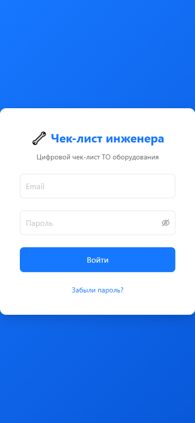
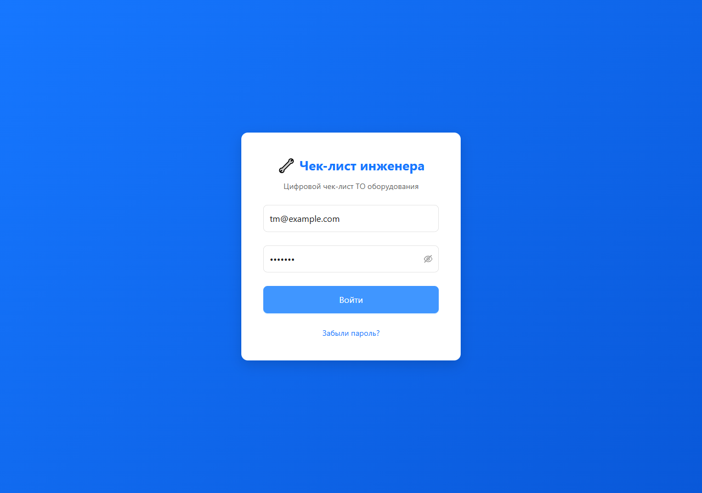
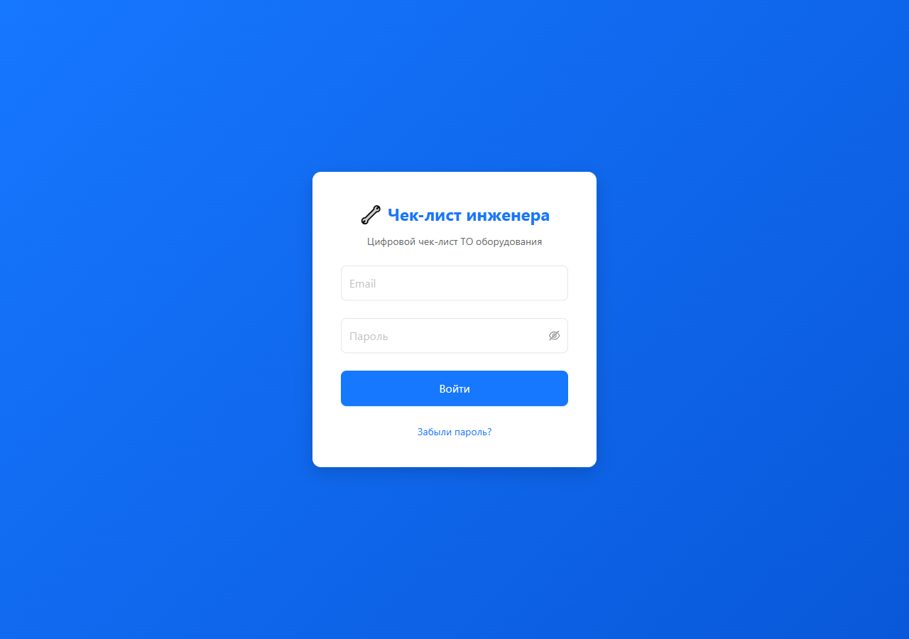

Пользовательская инструкция
Территориальный менеджер (ТМ)
1. Введение
Территориальный менеджер (ТМ) — диспетчер/контролёр региона. Вы управляете визитами закреплённых за вами инженеров: планируете работы, контролируете ход выполнения, при необходимости корректируете данные и формируете отчёты.
1.1. Ваши возможности
| Функция | Описание |
|---|
| Просмотр визитов | Все визиты закреплённых инженеров |
| Дашборд | Сводная статистика по статусам работ |
| Переназначение | Передача визита между инженерами вашей группы |
| Редактирование | Корректировка данных визита перед отправкой |
| Отчёты | Формирование и отправка отчётов по визитам |
| Сводные отчёты | Агрегированный отчёт за период / по объектам |
| Управление инженерами | Создание инженеров в вашей группе, управление специализацией |
| Импорт заявок | Загрузка перечня заявок из Excel |
| Назначение по заявкам | Привязка инженеров к импортированным заявкам |
2. Вход в систему
- Откройте приложение в браузере.
- Введите email и пароль.
- Нажмите «Войти».
Скриншот 2.1 — Экран входа

Форма входа с полями «Email» и «Пароль», кнопкой «Войти» и ссылкой «Забыли пароль?». Логотип приложения.
2.1. Восстановление пароля
Нажмите «Забыли пароль?» на экране входа — на указанный email придёт ссылка для сброса.
3. Дашборд мониторинга
На главной странице отображается дашборд со сводной статистикой по всем визитам ваших инженеров:
| Показатель | Описание |
|---|
| Запланированные | Визиты со статусом planned — ещё не начаты |
| В работе | Визиты со статусом in_progress — инженер начал работу |
| Завершённые | Визиты со статусом completed — все параметры заполнены |
| Отправленные | Визиты со статусом sent — отчёт отправлен заказчику |
Скриншот 3.1 — Дашборд ТМ

Главная страница ТМ. Вверху — 4 карточки-счётчика: «Запланированные» (синяя), «В работе» (жёлтая), «Завершённые» (зелёная), «Отправленные» (зелёная). Каждая карточка показывает число визитов. Ниже — список последних визитов или график.
Дашборд позволяет быстро оценить загрузку и статус работ по территории.
4. Просмотр и управление визитами
4.1. Список визитов
Перейдите в раздел «Визиты» — отобразится список всех визитов закреплённых за вами инженеров.
Фильтрация:
- По инженеру — выберите конкретного инженера из выпадающего списка
- По статусу — запланированные, в работе, завершённые, отправленные
- По периоду — укажите диапазон дат
Скриншот 4.1 — Список визитов с фильтрами

Страница «Визиты». Вверху — панель фильтров: выпадающий список «Инженер», выпадающий список «Статус», диапазон дат (от — до). Ниже — таблица/список визитов. Для каждого: адрес, дата, инженер, статус (цветной бейдж), количество задач.
4.2. Просмотр деталей визита
Нажмите на визит в списке — откроется полная информация:
- Адрес объекта, дата, время, сезон
- Инженер
- Список задач (оборудование) с параметрами и фотографиями
- Статус заполнения каждой задачи
- Заключение и рекомендации
Скриншот 4.2 — Детали визита (просмотр ТМ)
[ТРЕБУЕТСЯ СКРИНШОТ]
Страница визита. Вверху — общая информация: адрес, дата, время, инженер, статус. Ниже — список задач (таблица «Проведённые работы»). Для каждой задачи: вид оборудования, помещение, статус, иконка вложений. Кнопки действий: «Редактировать», «Переназначить», «Сформировать отчёт», «Удалить».
4.3. Удаление визита
Если визит содержит некорректные данные:
- Откройте визит.
- Нажмите «Удалить».
- Подтвердите удаление.
Визит будет скрыт из списков (мягкое удаление), но данные сохранятся в базе для истории.
5. Переназначение визитов
Если инженер не может выполнить визит (болезнь, отпуск, замена), вы можете передать его другому инженеру из вашей группы.
5.1. Как переназначить
- Откройте визит в списке.
- Нажмите «Переназначить».
- Выберите нового инженера из списка закреплённых за вами инженеров.
- Подтвердите действие.
Скриншот 5.1 — Диалог переназначения визита
[ТРЕБУЕТСЯ СКРИНШОТ]
Модальное окно «Переназначение визита». Поле «Текущий инженер» (заблокировано, показывает текущего). Поле «Новый инженер» (выпадающий список с инженерами группы). Кнопки «Переназначить» (зелёная) и «Отмена» (серая).
5.2. Ограничения
- Переназначить можно только визиты в статусах
planned и in_progress
- Новый инженер должен быть закреплён за вами
- Инженер, которому назначен визит, получит уведомление
6. Редактирование визита инженера
Вы можете скорректировать данные визита перед отправкой отчёта.
6.1. Что можно редактировать
- Параметры задач (контролируемые поля)
- Заключение и рекомендации
- Добавлять/удалять задачи
6.2. Как редактировать
- Откройте визит.
- Нажмите на нужную задачу — откроется страница параметров.
- Внесите изменения и нажмите «Сохранить».
Скриншот 6.1 — Редактирование задачи (вид ТМ)
[ТРЕБУЕТСЯ СКРИНШОТ]
Страница параметров задачи, открытая ТМ. Те же поля, что и у инженера: контролируемые параметры, заключение, рекомендации. Отличие — может быть метка «Редактирование ТМ» или другой цвет заголовка. Кнопка «Сохранить» активна.
6.3. Возврат визита инженеру
Если визит требует доработки, вы можете вернуть его инженеру. Статус визита изменится на corrected_by_tm, инженер получит уведомление.
Скриншот 6.2 — Кнопка «Вернуть инженеру»
[ТРЕБУЕТСЯ СКРИНШОТ]
Страница визита (вид ТМ). Среди кнопок действий — «Вернуть инженеру» (оранжевая/жёлтая). При нажатии — подтверждение с полем для комментария.
7. Формирование и отправка отчётов
7.1. Отчёт по отдельному визиту
- Откройте завершённый визит.
- Нажмите «Сформировать отчёт».
- Система создаст PDF-отчёт и ZIP-архив с фотографиями.
- Заполните поля отправки:
- Кому — email заказчика
- Копия (CC) — опционально
- Тема — формируется автоматически
- Комментарий — опционально
- Нажмите «📤 Отправить» или «💾 Скачать».
Скриншот 7.1 — Страница отправки отчёта (ТМ)
[ТРЕБУЕТСЯ СКРИНШОТ]
Форма отправки отчёта. Поля: «Кому» (email заказчика), «Копия (CC)», «Тема» (авто), «Комментарий». Кнопки «📤 Отправить» и «💾 Скачать». Дополнительно — блок «Сканы актов» с drag-and-drop зоной.
7.2. Отчёт с прикреплением сканов актов
При формировании отчёта вы можете приложить сканы подписанных актов:
- Формат: JPG, PNG, PDF
- До 10 файлов, до 50 МБ суммарно
- Изображения автоматически сжимаются
- PDF-файлы объединяются в итоговый документ
Скриншот 7.2 — Загрузка сканов актов
[ТРЕБУЕТСЯ СКРИНШОТ]
Блок «Сканы актов» с drag-and-drop зоной. Текст: «Перетащите файлы сюда или нажмите для выбора». Подпись: «JPG, PNG, PDF. До 10 файлов, до 50 МБ». Ниже — список загруженных файлов с иконками и кнопками удаления.
8. Сводный отчёт за период
Формирует агрегированный PDF-отчёт по всем визитам за указанный период.
8.1. Как сформировать
- Перейдите в раздел «Отчёты».
- Выберите «Сводный отчёт за период».
- Укажите дату начала и дату окончания.
- Нажмите «Сформировать».
Скриншот 8.1 — Форма сводного отчёта

Страница «Отчёты». Переключатель типа: «Сводный отчёт за период» (активен). Поля: «Дата начала» (календарь), «Дата окончания» (календарь). Опционально — фильтр по инженеру. Кнопка «Сформировать» (зелёная). Ниже — блок загрузки сканов актов.
8.2. Структура сводного отчёта
- Титульный лист: название отчёта, период, дата формирования, ФИО составителя
- Группировка по объектам — каждый объект начинается с новой страницы
- Для каждого визита: адрес, дата, инженер, задачи с параметрами, превью фото, заключения и рекомендации
Скриншот 8.2 — Пример сводного отчёта (PDF)
[ТРЕБУЕТСЯ СКРИНШОТ]
Открытый PDF-файл сводного отчёта. Титульная страница: «СВОДНЫЙ ОТЧЁТ», период, дата формирования, ФИО. Далее — статистика (визитов, задач, замечаний). Затем — первый объект с визитами, параметрами и фото.
9. Отчёт по объектам
Формирует отчёт по выбранным объектам за указанный период.
9.1. Как сформировать
- Перейдите в раздел «Отчёты».
- Выберите «Отчёт по объектам».
- Отметьте галочками нужные объекты (мультивыбор).
- Укажите период.
- Нажмите «Сформировать».
Скриншот 9.1 — Форма отчёта по объектам
[ТРЕБУЕТСЯ СКРИНШОТ]
Страница «Отчёты». Переключатель: «Отчёт по объектам» (активен). Поле «Объекты» — мультивыбор (Select mode="multiple") с поиском. Поля «Дата начала» и «Дата окончания». Кнопка «Сформировать».
10. Управление инженерами
10.1. Создание инженера
- Перейдите в раздел «Профиль» → блок «Мои инженеры».
- Нажмите «+ Создать инженера».
- Заполните:
- ФИО — обязательно
- Email — обязательно (на него будет отправлен временный пароль)
- Специализация — чекбоксы (ВиК, ИСЖ, ГПМ, ДГУ, ИБП)
- Нажмите «Создать».
Инженер получит на email временный пароль Welcome2026! с инструкцией сменить пароль при первом входе.
Скриншот 10.1 — Создание инженера
[ТРЕБУЕТСЯ СКРИНШОТ]
Модальное окно «Создание инженера». Поля: «ФИО» (текст), «Email» (текст), «Специализация» (5 чекбоксов: ВиК, ИСЖ, ГПМ, ДГУ, ИБП; по умолчанию выбрана ИСЖ). Кнопки «Создать» (зелёная) и «Отмена» (серая).
10.2. Изменение специализации инженера
- В списке «Мои инженеры» найдите нужного.
- Нажмите на его специализацию.
- Отметьте/снимите нужные чекбоксы.
- Изменения вступают в силу немедленно.
Скриншот 10.2 — Список «Мои инженеры»
[ТРЕБУЕТСЯ СКРИНШОТ]
Блок профиля «Мои инженеры». Таблица/список: ФИО, email, специализация (цветные бейджи: ВиК — синий, ИСЖ — зелёный, ГПМ — оранжевый, ДГУ — фиолетовый, ИБП — красный). Кнопка «+ Создать инженера» вверху. Для каждой строки — действия (редактировать, удалить).
11. Работа с заявками
Заявки — это задачи из внешней системы заказчика, которые импортируются в приложение и автоматически создают визиты.
11.1. Просмотр заявок
Перейдите в раздел «Заявки» — отобразится список заявок по объектам вашей территории.
Скриншот 11.1 — Список заявок (ТМ)

Страница «Заявки». Таблица заявок: номер заявки, адрес, вид оборудования, статус, назначенный инженер. Фильтры: по статусу, по инженеру, по объекту. Кнопка «Импорт» вверху.
11.2. Назначение инженера на заявку
- Найдите заявку в списке.
- Нажмите «Назначить инженера».
- Выберите инженера из вашей группы.
- Инженер получит уведомление о назначении.
Скриншот 11.2 — Назначение инженера на заявку
[ТРЕБУЕТСЯ СКРИНШОТ]
Модальное окно «Назначение инженера». Информация о заявке (номер, адрес, оборудование). Поле «Инженер» (выпадающий список). Кнопки «Назначить» (зелёная) и «Отмена» (серая).
11.3. Отчёт по номерам заявок
Вы можете сформировать отчёт, связанный с конкретными номерами заявок. Это позволяет отследить, какие внешние заявки были выполнены и с какими результатами.
12. Импорт заявок из Excel
12.1. Подготовка файла
Подготовьте Excel-файл (.xlsx) со следующими колонками:
| Колонка | Описание | Пример |
|---|
| № заявки | Уникальный номер во внешней системе | IS130366092 |
| Статус | Статус заявки | Новая |
| Вид оборудования | Тип оборудования | Внутренний блок СС |
| Код объекта | Аналитический код объекта | RU/76/57 |
| Адрес | Полный адрес | г Ярославль, ул Серго Орджоникидзе, 37к2 |
Ограничения:
- Формат:
.xlsx (Microsoft Excel 2007+)
- Первая строка — заголовки столбцов
- До 5 000 строк за одну загрузку
12.2. Импорт
- Перейдите в раздел «Заявки» → «Импорт».
- Загрузите Excel-файл.
- Система выполнит предварительную валидацию.
- Если есть ошибки — отобразится список с подробным описанием.
- Подтвердите импорт.
Скриншот 12.1 — Страница импорта заявок
[ТРЕБУЕТСЯ СКРИНШОТ]
Страница импорта. Drag-and-drop зона для загрузки файла. Текст: «Загрузите Excel-файл (.xlsx) с заявками». Кнопка «Выбрать файл». После загрузки — превью данных (первые строки таблицы). Кнопка «Импортировать».
Скриншот 12.2 — Ошибки валидации при импорте
[ТРЕБУЕТСЯ СКРИНШОТ]
Модальное окно с ошибками валидации. Заголовок: «Обнаружены ошибки при импорте». Таблица: номер строки, описание ошибки. Примеры: «Строка 5: объект с кодом RU/76/57 не найден», «Строка 12: неизвестный вид оборудования». Кнопка «Закрыть».
12.3. После импорта
Для каждой заявки система:
- Находит адрес по коду объекта
- Находит вид оборудования по названию
- Создаёт или обновляет визит
Статусы обработки:
| Статус | Описание |
|---|
new | Новая |
matched | Объект и оборудование найдены |
created | Визит создан |
error | Ошибка (см. причину) |
skipped | Пропущена (дубликат) |
13. Личный кабинет
Перейдите в раздел «Профиль» для просмотра и настройки личных данных.
13.1. Информация в профиле
- ФИО — ваши данные
- Email — контактный адрес
- Роль — Территориальный менеджер
- Закреплённые объекты — список адресов вашей территории
- Мои инженеры — список закреплённых инженеров
Скриншот 13.1 — Профиль ТМ

Страница профиля ТМ. Блоки: личная информация (ФИО, email, роль), «Закреплённые объекты» (таблица с адресами и кодами), «Мои инженеры» (список с кнопкой создания). Избранные объекты (со звёздочками).
13.2. Закреплённые объекты
Для каждого объекта отображается:
- Полный адрес
- Аналитический код (например,
RU/77/001)
- Индикатор неисправностей — ⚠️ (красный), если в последнем визите есть замечания
Скриншот 13.2 — Закреплённые объекты
[ТРЕБУЕТСЯ СКРИНШОТ]
Таблица «Закреплённые объекты». Колонки: адрес, аналитический код, индикатор. Для строк с замечаниями — красная иконка ⚠️. Пагинация внизу (10/20/50 на странице).
14. Избранные объекты
14.1. Добавление
Нажмите ⭐ рядом с адресом объекта. Максимум 20 объектов.
14.2. Использование
Избранные объекты отображаются в профиле. Нажмите на объект для быстрого перехода к созданию визита.
15. Уведомления
В верхней части экрана (в шапке) отображается колокольчик 🔔 с количеством непрочитанных уведомлений.
15.1. Типы уведомлений
| Тип | Описание |
|---|
| Инженер завершил визит | Визит готов к проверке |
| Инженер отказался от заявки | Нужно переназначить |
| Новые заявки импортированы | Требуется назначение инженеров |
| Предложение оборудования | Инженер предложил добавить оборудование |
Скриншот 15.1 — Колокольчик уведомлений
[ТРЕБУЕТСЯ СКРИНШОТ]
Верхняя часть страницы (Header). Справа — иконка колокольчика 🔔 с красным бейджем (число непрочитанных). При нажатии — выпадающий список уведомлений с текстом, датой и иконкой типа.
Скриншот 15.2 — Список уведомлений
[ТРЕБУЕТСЯ СКРИНШОТ]
Выпадающая панель уведомлений. Для каждого: иконка типа, текст уведомления, дата/время. Непрочитанные — с жирным шрифтом. Внизу — ссылка «Все уведомления».
15.2. Управление
Нажмите на колокольчик — откроется список уведомлений. Прочитанные отмечаются автоматически.
16. Часто задаваемые вопросы
Как посмотреть все визиты конкретного инженера?
В списке визитов используйте фильтр «По инженеру» — выберите нужного из выпадающего списка.
Можно ли переназначить уже завершённый визит?
Нет, переназначение доступно только для визитов в статусах «Запланирован» и «В работе».
Как сформировать отчёт по нескольким объектам?
Перейдите в «Отчёты» → «Отчёт по объектам», выберите нужные объекты галочками и укажите период.
Что будет, если удалить визит?
Визит будет скрыт из списков (мягкое удаление), но данные сохранятся в базе. Восстановление возможно через администратора.
Как создать нового инженера в своей группе?
В профиле → «Мои инженеры» → «+ Создать инженера». Укажите ФИО, email и специализацию. Инженер получит временный пароль на email.
Как вернуть визит инженеру на доработку?
Откройте визит и нажмите «Вернуть инженеру». Статус изменится на corrected_by_tm, инженер получит уведомление.
Можно ли отредактировать визит после отправки отчёта?
Да, вы можете открыть визит и внести изменения. После корректировки можно повторно сформировать и отправить отчёт.
Версия документа: 1.0
Дата обновления: Июль 2026
Приложение: Цифровой чек-лист инженера v1.0